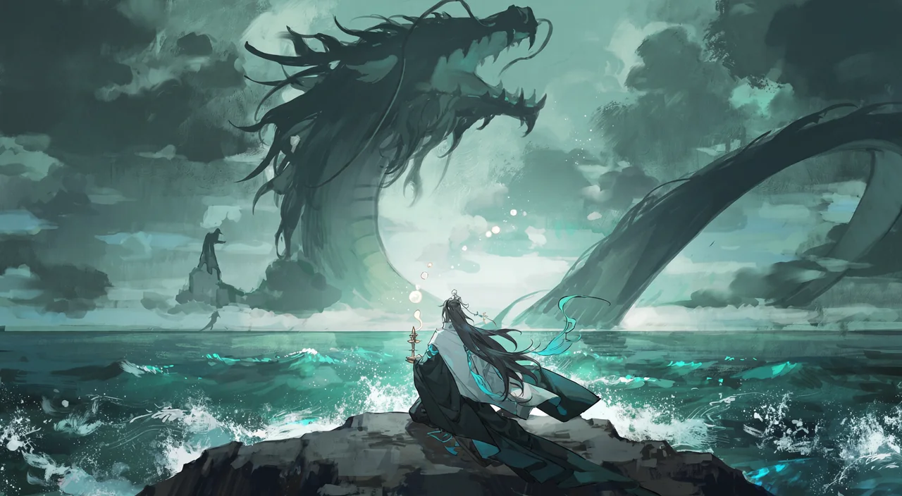
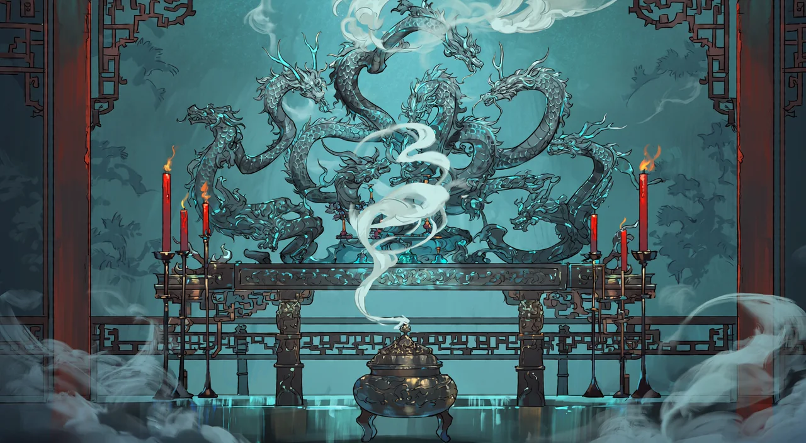
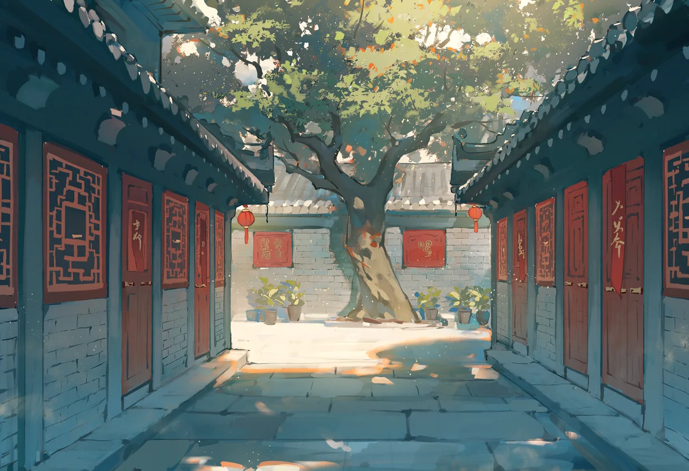
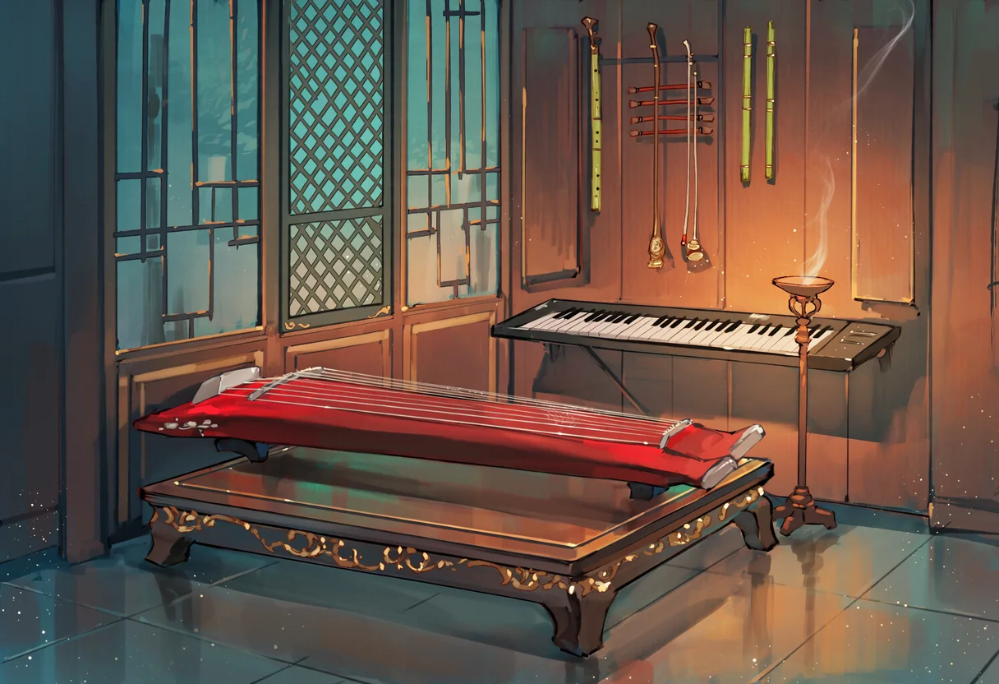
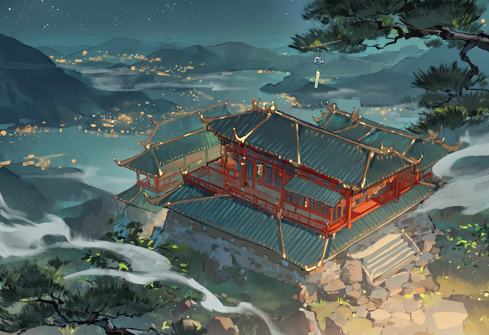
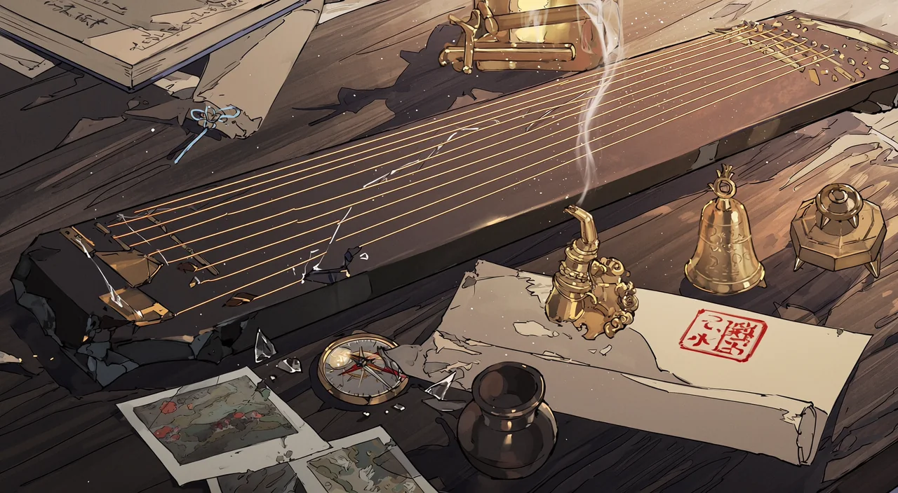

書架上的東西都能點，點了就翻到那一章。
除夕夜
除夕夜，何伯把一串銅鑰匙交到你手上，說藏書樓的燈還亮著。
推門進去，書架前坐著一個白髮的男人，正在續茶。
「親愛的，你來得正好。」
他沒有起身，只把一盞燈推到你面前，「明天你就要立契了。今晚，先聽我說個故事。」
細目・藏書樓凡例
- 藏書樓的書可以借出，以三日為限。逾期者，編者會親自上門討，順便喝茶。
- 樂器櫃、宗門舊檔、封碑庫之物不外借，請就地閱覽。
- 若干存物須經手人同意方可取閱。經手人不同意，請勿勉強；勉強也沒用。
- 編者的按語是私見，不作宗門正式解釋。正式解釋請問祀典師高先生，或問老七；後者會收費，收一盤棋。
- 借閱卡請據實填寫。霍無咎，這條是寫給你的。
水漫山河
很久以前，龍王的龍威溢出水府，大水漫過山河。
宗門初祖帶著人去求見，談了一場很長的判：人族世代供奉，龍族收斂龍威，九個兒子留下來鎮守這片土地。
父王覺得這筆交易很划算。
九個逆子，正好需要人管。

細目・初契錄、承嗣譜與龍王
《初契錄》殘本十二卷
龍契是雙向的神契：宗門以供奉養九子的神性，九子以神通護這片山河。它不是奴契，也不是婚契。
原件早已不存，現存的是數千年間一抄再抄的本子，各卷說法不太一致。當年在場的見證者還活著一位：水族的潮七公。他喝醉時講的版本最精彩，可信度另計。
那筆交易，各家怎麼看
- 龍王：做了筆好交易，數千年後仍這麼覺得。
- 初祖：替人間換來了安寧。
- 九子：有人覺得被父親賣了，有人覺得多了個免費住處，也有人根本沒細看過契約。老七當年把條文從頭到尾審過一遍，他是例外。
《承嗣譜》
宗主之位的承繼，看的是血脈中與龍契的共鳴，不看年齡、性別、財產或長幼。宗主出缺時，祖堂的龍契石壇會在歲末指向下一位。
宗主可以決定的：祭儀與供奉的安排、宗門公共財產與重大修繕、訪客與開放場所、員工的重大任免、是否擇主。
宗主不能決定的：九子的私產、職業與情人；九子是否愛上自己；九子的私人行動；以及無視神契處置鎮守之地。
宗主是管理者與承契者，不是九子的主人。
龍王與《水府來箋》
龍王是九子的父親、初代龍契的訂立者，龍威遠在九子之上。他把兒子們交給宗門，一半是停息水患的交易，一半是想讓他們學著跟凡人相處。
他平時不管宗門，不替兒子收拾麻煩，也不當家務爭執的裁判，從不親自出場。春節可能透過水族使者送來一箱海底古物、幾株深海靈草，或一封只有九子看得懂的短箋。
這一函收的是歷年短箋，內容多半是「知道了」「別鬧」與天氣。最長的一封有九個字，我們九個各讀出了不同的意思。

祖堂
明天一早，你會站在這裡。
堂上是九尊神龕，堂下壓著初代龍契石壇。高先生會念一段很長的祝文，然後問你要不要擇主：選一位當主奉，或者誰也不選。
「親愛的，不管你選不選，接下來三十天，我們九個都住在這座宅子裡。」
細目・龍契祭典記（祀典師手抄）
謹按歷代祀典，錄龍契諸儀於後，以備新任宗主覽閱。文辭從舊，宗主見諒。
一 石壇指向
宗主之位出缺，祖堂龍契石壇於歲末顯紋，指向承繼之人。宗門於歲首前將其請回鎮瀾院，正月初一正式接掌。
二 歲首共居
新宗主繼位，九子須全數返回鎮瀾院，與宗主同住三十日，以正月初一為第一日。白日九子可自由工作、外出、會友，晚間原則上回宅。無論擇主與否，皆十人同居。宗主若久離香江，儀程暫停，已滿之日不作廢。龍契不以囚禁或傷害強行履約。
三 擇主
宗主可擇一位龍子為本代主奉。其儀：宗主於九龍祖堂，為所擇之龍子上香，於龍契之上落硃砂筆，由祀典師唱名。三十日內，宗主擇定之日即可行儀，不必拘於初一。
主奉負責主要陪伴，優先承接宗主個人之供奉；其餘八位照常同住、照常起居，亦得與宗主各自往來。擇主所定者，供奉之序與輕重而已：不定去留，不予主奉獨佔、婚配或親近之權。擇與不擇、擇誰，唯宗主自決，旁人不得代擇，宗族長輩亦然。
四 共契
宗主未擇主者，即為九子共契，九位共承陪伴之責。誰得閒、誰正要出門，皆可能請宗主同行。
五 供奉
宗主承契之後，身有靈力，能與九子相應。靈力之傳遞，可經焚香、祝禱、樂音、儀式、陪伴，以及雙方自願之親近（此條歷代祀典師皆略過不講，本人亦然）。親近非履約之必要，亦不保證勝於祭拜。主奉得較多個人供奉；其餘八位由祖堂共祭取得基本靈力。九子不因數日缺供而衰弱，宗主不必驚慌。九子各有所好，祀典未載，宜問本尊。
六 約束
- 九子不得以龍威危害受庇護之地域。
- 九子不得傷害宗主、強奪供奉。
- 宗主不得以主奉之名，令九子違背神性。
- 宗主不得支配九子之私產、職業、情人與私事。
七 違契
違契之時，龍契先示警：靈紋異常、供奉失衡、神壇鳴響。九子故意毀壞所守靈脈者，相關神通受限，須自行補救。宗主一時失誤，補行祭儀即可，不致受傷。
八 第三十日
第三十日，祖堂行承契完成之儀，儀簡，不必盛服。儀畢，同居之約解除，九子去留各隨其意。宗主仍為宗主；三十日乃承契之始，非其終。
右錄八事，皆祀典所載。
歲次臘月 高仲儀 謹錄仲儀
九子
明天你會見到九個穿西裝、牛仔褲、漆皮褲的男人。
「不過在人類學會寫字以前，我們長這樣。」
細目・非人與遮蔽術
現代仍有神獸、山鬼、狐妖、精怪等非人族類，大多數普通人不知道他們存在。非人之間沒有統一的政府，靠各地舊約、地盤、血脈與人情維持秩序；他們在人間經商、戀愛、交友，不全是好人，也不全是壞人，年紀越大，倫理觀越不像人。
遮蔽術。九子在外收起角、尾、鱗，偶爾露出一點，微弱的遮蔽術會讓普通人當成飾物、造型或光影。遮蔽不控制記憶，對拍攝設備與強烈的神通未必有效。
現代身分。九子都有合法的身分與工作紀錄，長生靠長週期更換身分、交接產業處理。長期認識他們的人類，多半只知道他們來自同一個古老家族。
鎮瀾院的位置。在非人世界裡，鎮瀾院是受龍契保護的古老宗門祖地，不是非人社會的首都。非人訪客進宅須通報身分與來意，由何伯登記；任何訪客不得在宅內施展大規模幻術、鬥法或破壞封印，九子的朋友也一樣。
下列體長皆為收斂原身時的尺寸，施展神通時靈相可再擴大。九子在祖堂與後山不宜完全化形；上一次有人這麼做，祖堂換了一根樑。

鎮瀾院
明天你會從前庭的青磚門樓走進來。
過了正廳是天井，老樹、石板地、迴廊，我們吃點心、吵架、曬太陽都在這裡。
東院是大哥的琴室，別碰他的琴。
後山最高的地方是觀風台，三哥常待在那裡，樹上掛著幾枚風鈴。



細目・鎮瀾院全圖、住房與宅內規矩
鎮瀾院位於新界元朗錦田偏僻的山緣，一條私人山路通往錦田市區。外表古老，住起來很現代：初代龍契留下地下的龍契石壇與鎮水石基；古代留下祖堂、碑廊與藏書樓；明清以後是青磚主樓、天井與院牆；二十世紀加了廚房與宿舍；現代加了套房、電梯、空調、車庫、網路與保全。有一條走廊，量三次長度都不一樣。
點圖上任一區域查看說明。
宅內規矩
- 私人房間須經同意才能進入。
- 祖堂是公共祭祀場所，私人供奉也可在各自空間進行。
- 後山不動土，但可以散步。
- 三十日內以老宅為居所，白天可自由出入。
- 十人的住房與擇主無關，主奉不會因為被選中就搬進宗主房。
三十日
這三十天不會安靜。
初二全族來團拜，盆菜擺滿一桌；初三是赤口，老鰲偏偏挑這天來罵人；初四到初六，幾位不是人的老朋友會帶著禮物上門。
十五元宵，蘭鏡臺會在院子裡放一場幾百年前的燈。

宅中九物
住久了你會發現，這座宅子裡有些東西誰也不肯碰。
一張斷了弦的琴、一口有裂痕的古鐘、一張舊合照……它們都有來歷。
「親愛的，來歷這種事，等你真的想聽，自然會有人說。」
細目・存物登記
本卷只登記品名、存處與經手限制，其餘不錄。
天快亮了
窗外的天色淡了一層。
「走之前，在借閱卡上簽個名吧。」
他把卡片推過來，「我那幾個兄弟的借書紀錄你可以看看。別學他們。」